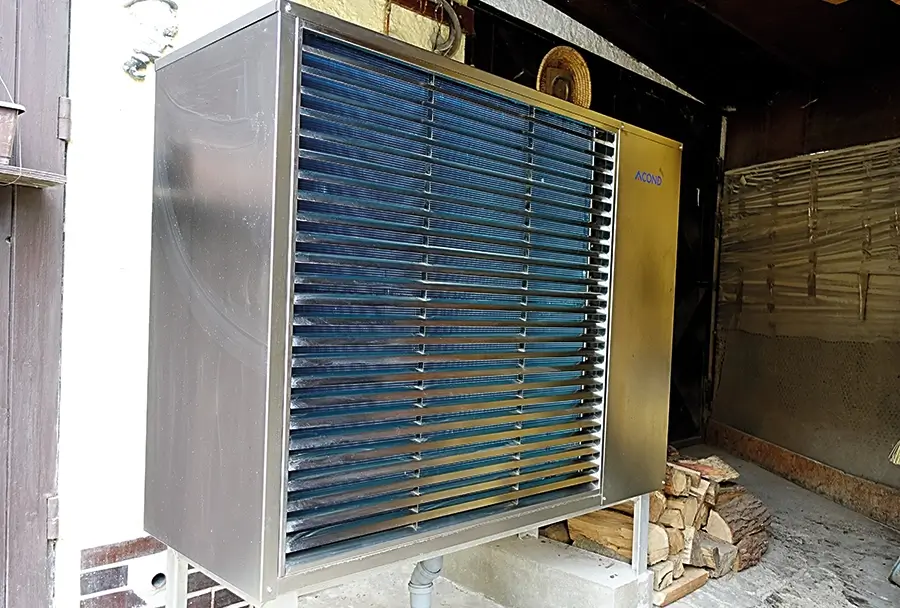
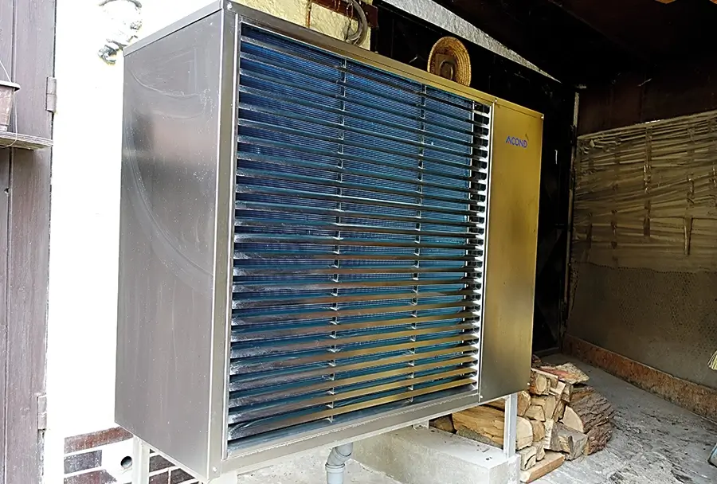

Tepelná čerpadla


Voda - Voda
Tepelná čerpadla SPIRÁLA typu voda‑voda energii získávají přečerpáváním spodní vody ze studny nebo vrtu, kde je i v zimě stabilní teplota 8 - 11 °C. Je to tedy nejúčinější zdroj tepla.
Tepelná čerpadla SPIRÁLA se nezanášejí usazeninami z tvrdé vody, protože je celý systém navržen tak, že rychlost proudění je zvolena nad hranicí usazování.
Za celou dobu výroby nebylo potřeba žádné čerpadlo SPIRÁLA chemicky čistit.
 

Vzduch - Voda
Tepelná čerpadla ACOND PRO typu vzduch‑voda energii získávají odběrem tepla z okolního vzduchu. Čím vyšší je teplota vzduchu, tím vyšší je topný faktor a větší úspora. A čím nižší je výstupní teplota, tím je opět vyšší topný faktor (např. topení do poldahovky).
Tepelná čerpadla ACOND jsou neskutečně tichá a jsou vyvíjená a vyráběná v Čechách se 100% servisem od českého výrobce se stardadní zárukou 5 let a na kompresor 10 let.